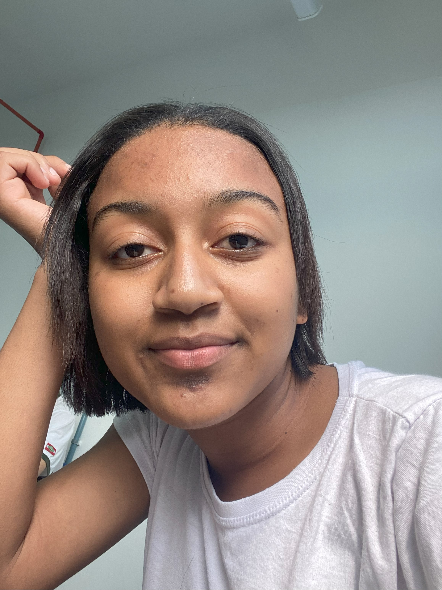

Sobre nós

Bem-vindo ao nosso site de biologia celular! Somos uma dupla de estudantes e nosso objetivo é facilitar o
aprendizado sobre a estrutura e função das células, tornando a biologia acessível e interessante para todos.
Neste site, você encontrará recursos variados, como explicações claras e imagens ilustrativas.
Queremos que cada visitante se sinta inspirado a descobrir mais sobre como as células são fundamentais para a vida.
Acreditamos que o conhecimento sobre células é essencial para compreender a
vida em nosso planeta e sua importância em áreas como saúde, meio ambiente e biotecnologia.
Nossa equipe está sempre buscando novas informações e maneiras de tornar o aprendizado divertido e envolvente.
Esperamos que gostem do site!